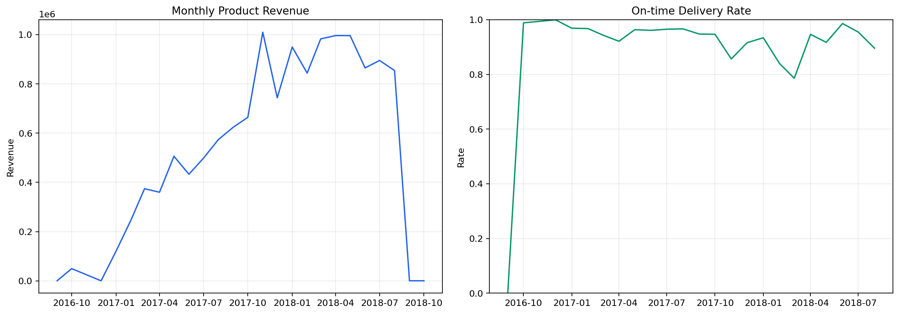
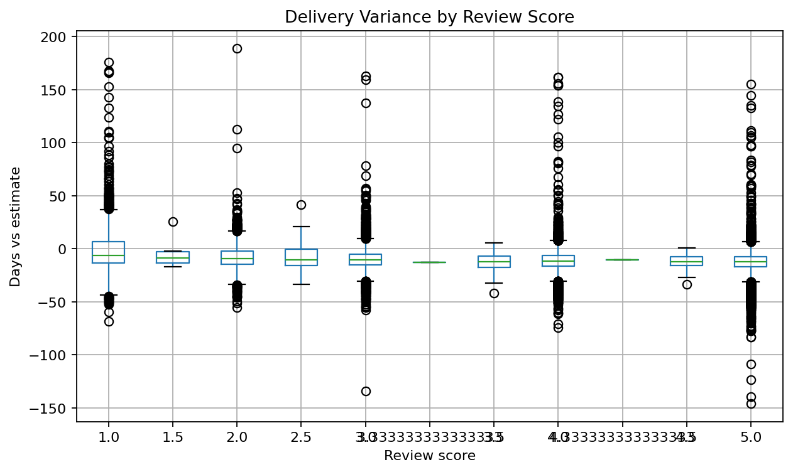
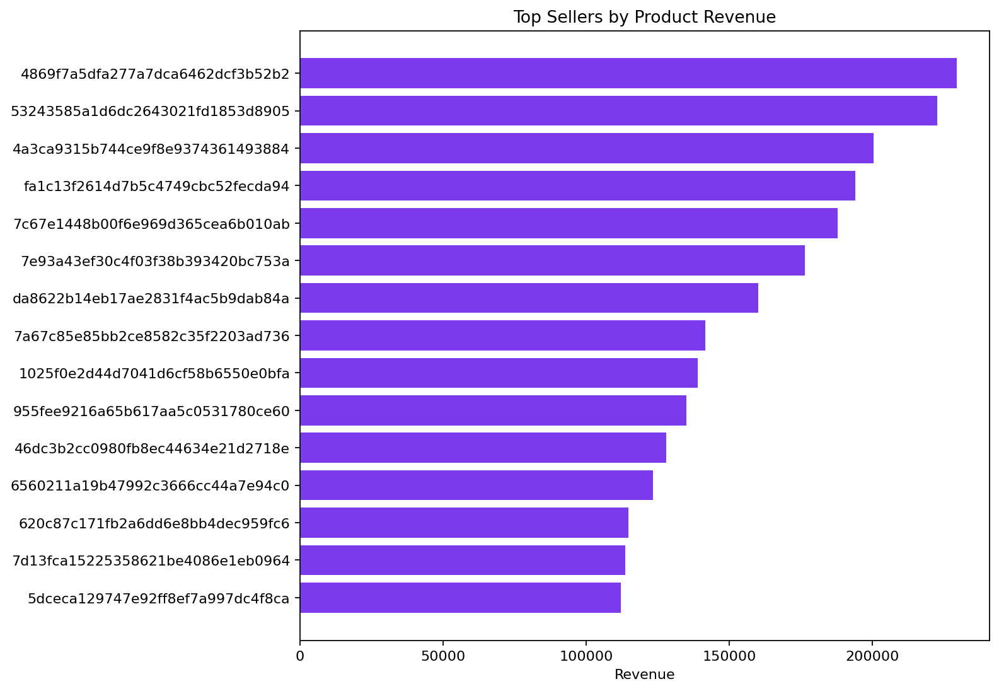

E-commerce Delivery and Customer Experience
Author: Mohammed Adeen Shaik
Review date: 11 October 2026
Research question
How do delivery reliability, seller concentration and reviews vary within the Olist marketplace?
Data and provenance
Publisher-provided Olist historical marketplace tables.
Source materials are linked from the repository README. Input fingerprints are recorded in the evidence manifest so a reader can identify the exact committed artifacts used in this review.
Method and analytical rationale
Orders are the reporting grain. Items, payments and reviews are aggregated before joining so a many-to-many merge cannot inflate order-level totals.
Findings and interpretation
Fresh execution on 11 October 2026 using publisher Olist tables. The reporting model contains 99,441 order-level records. Monthly revenue and on-time delivery rates use the exported monthly scorecard. Review-versus-delivery plots are associations within delivered and reviewed records, not evidence of a causal improvement. Customer and seller identifiers are not published in the reading edition.
| Measure | Value |
|---|---|
| order rows | 99441 |
| monthly buckets | 25 |
Limitations
Review associations do not establish that delivery timing caused a rating. Revenue is product value, not marketplace profit. Seller comparisons require adequate volumes.
Reproduction
Use the setup commands and input contract in the repository README. Open the notebook catalogue for annotated code and saved outputs. Keep raw records and model binaries local; public reports contain aggregate results or source-embedded figures.
Final visual results

Figure from key_visuals.ipynb, original code cell 3.

Figure from key_visuals.ipynb, original code cell 4.

Figure from key_visuals.ipynb, original code cell 5.